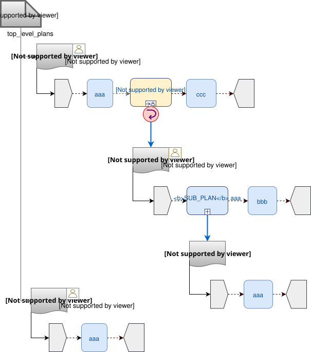

Global Semantics
This section describes the global semantics of the model in execution, taking into account all elements described above.
Control Flow
Graph Structure
The execution graph structure of a Work Plan consists of its top-level Task Plan(s) (WORK_PLAN.top_level_plans) and subordinate Task Plans linked from Hand-offs and sub-plans (i.e. DISPATCHABLE_TASK<HAND_OFF> and DISPATCHABLE_TASK<SUB_PLAN>) Task types. Top-level Task Plans are those that do not have prior executable Tasks, and are thus active at activation time. The following illustrates a typical structure.

General Scheme
When a materialised Work Plan is activated (see below), its top-level Task Plans are active, meaning that their initial Task(s) are in the available lifecycle state, as described above.
In a Task Plan, the execution path follows the chain of Tasks defined in the definition of the Plan, which is a TASK_GROUP. It descends into and exits any other TASK_GROUPs encountered within the Plan as Tasks are executed and completed or cancelled by their workers. A Task becomes available based on a combination of completion (or skipping) of previous Tasks and other conditions, according to the Task lifecycle logic described above.
The currently available Task in a Task Plan corresponds to the current execution point of the Plan. For parallel execution Task Groups, more than one Task can be available simultaneously, meaning there is more than one thread of execution. As Tasks complete, and timing and other events occur, making new Tasks available, each thread of execution advances through the Task Plan graph.
On the way, the execution path is modified by conditional nodes and also by Dispatchable Tasks, as follows.
Conditional Nodes
The various kinds of conditional nodes represent different ways of controlling execution of a Task Plan.
A CONDITION_GROUP / CONDITION_BRANCH structure is processed in the same way as an if-then/elseif-then/else statement in a programming language, i.e. in-order processing, with the first matching path followed. In the temporal Plan execution environment, the processing proceeds instantaneously, i.e. there is no wait state involved.
A DECISION_GROUP / DECISION_BRANCH structure is processed like a case (aka switch) statement in a programming language, i.e. evaluate the DECISION_GROUP.test, find the first branch whose value_constraint (a value range) contains the value, and follow it. This is also instantaneously processed.
The other two types of Choice Group are blocking.
An ADHOC_GROUP / ADHOC_BRANCH structure is processed using an implicit wait state, since it requires user input. It will thus block until input is supplied. The inherited CHOICE_GROUP.timeout attribute can be used to defined actions if no user input supplied. When this is not defined, a global timeout is triggered, breaking the wait state.
Finally the EVENT_GROUP / EVENT_BRANCH structure is blocking due to TASK_WAIT states set on each branch. It is processed by waiting for one of the events on the branches to occur, or else for the timeout on the group to fire. As for the Ad hoc case, a timeout may be set in order to force processing if none of the specified events occurs, and if not set, a global timeout will break the wait state if nothing else happens.
Task Dispatching
Hand-offs
TBD:
External Requests
TBD:
System Requests
TBD:
Resume Semantics
The resume_type and resume_location attributes of the RESUME_ACTION class constitute the possibility of an uncontrolled jump or 'goto' within the Task execution structure. If allowed without limitation, it is likely to lead to undecidable situations in Plan execution, and unreliable execution histories. For example, if the execution history shows that some Task Y was performed, then it would normally be assumed that the preceding Task X had also been performed (even if cancelled), and by extension that any wait state such as an Event Branch had been satisifed by the relevant event being received. If however, a jump to Task Y from some Task A on a completely separate path were allowed, no such inference can be made, without appropriate processing rules regarding such jumps.
To create workable rules, the notion of the execution path described above has to be used, i.e. the path traversed so far throught the Group / Task graph to the current point. Because the graph has no cycles, a most recent common location for the execution path actually taken and the designated resume location can always be found. This location may be somewhere back in the current path, including at the start (no real common point), or the current Task (resume location is ahead, not behind).
Making the execution valid according to the Plan while allowing an arbitrary resumption point requires finding a valid path from the most recent common location to the resume location. This can be done if the intermediate steps from the most recent common point and the resume point can be shown to be traversable. There are three situations that can occur at each node along this path:
-
normal Tasks with no
wait_spec(i.e. planned or event-based timing): these may be automatically cancelled, meaning 'not done, not needed'; -
normal Tasks with a
wait_spec: these can be traversed if the relevant time-related or other events are known to have already been received; -
conditional Group structures: these can be traversed if the relevant conditions and/or events are known to be true, or to have already been received, respectively.
Whether the intermediate logical conditions or event wait states (including timeline events) up to the resume location are satisfiable can in general only be known at execution time. This means that at design time, no general rule can be used to limit the choice of a resume location. However, the intermediate wait states and conditions can be determined easily enough and shown in a tool to the designer, enabling at least a guess as to viability.
What actually happens at execution time depends on where the resume location is, as follows:
-
forward resume: the resume location is ahead of the current point on the execution path; getting there just requires the above algorithm of cancellation with condition and event checks;
-
alternate path: the resume location is on an alternate branch with respect to the current execution path; this may be treated as for the forward resume case;
-
current path: the resume location is earlier on the current path.
The last possibility implies the need to retry Tasks already performed, which must be in either the cancelled or completed state. Assuming that the intention of the resume location is to perform (again) the Task or Group at that location, the latter must be put back into the available state. This is enabled by the special transitions retry from cancelled to available and redo from or completed to available.
This doesn’t address what should happen at execution time when conditions or wait states at intermediate nodes from the most recent common point to the resume point cannot be met. The simplest approach is that they are manually overridden, as may already be done in normal path processing. This has the effect that such overrides are at least recorded in the execution history.
Aggregate Lifecycle State
During a Work Plan execution, the lifecycle state described above on each Task is recursively aggregated up to owning Task Groups (including Choice Groups, described below in [Decision Structures]), to the top Task Group (i.e. TASK_PLAN.definition). Consequently, the aggregate lifecycle state of a Task Plan as a whole is just the lifecycle state of its definition.
Sequential Groups
The following algorithm is used to compute the runtime lifecycle state of a Task Group for which execution_type is sequential from the set of states of its members.
//
// Aggregate lifecycle state algorithm.
// Infer the state of a collection whose members' states are in source_states.
// The order of if/else evaluation determines the correct result.
//
Task_lifecycle aggregate_state (Set<Task_lifecycle> source_states) {
if (source_states.contains(Abandoned))
return Abandoned;
else if (source_states.contains(Available))
return Available;
else if (source_states.contains(Planned))
return Planned;
else if (source_states.contains(Suspended))
return Suspended;
else if (source_states.contains(Underway))
return Underway;
else if (source_states.contains(Completed))
return Completed;
else if (source_states.contains(Cancelled))
return Cancelled;
else
return Initial;
}Consequences of the above algorithm include:
-
a Task Group at runtime is in a terminal state only if all recursively contained Tasks and/or other Task Groups are in terminal states;
-
completing a Task Group will ripple back up the Task Group hierarchy to a point where the completing Group is not the last remaining uncompleted Task or Group in the parent;
-
if the
abandonedstate is entered for a Task, the effect is to cause the current run of the enclosing Task Plan to beabandoned.
Parallel Groups
If TASK_GROUP.execution_type is parallel, then the value of concurrency_mode will also affect computation of Task Group lifecycle state, since in some modes, some Tasks will be ignored. The following table indicates the computation for Task Group state at any time during and after execution of its branches. Note that all decision structures, i.e. CHOICE_GROUPs, are equivalent to xor_one_path Task Groups, and are thus solved by the second entry in the table below.
| Concurrency mode | TP-VML | Lifecycle state rule |
|---|---|---|
|

|
Apply the algorithm to each branch; re-apply the algorithm using all branch results as the input set. |
|

|
Apply the algorithm to the chosen branch. |
|

|
Apply the algorithm to each commenced branch; re-apply the algorithm using these branch results as the input set. |
|

|
Apply the algorithm to each commenced branch; apply the OR-join algorithm below to this set. |
//
// OR-join algorithm: apply to Aggregate lifcycle algorithm results
// obtained from all commenced branches.
//
Task_lifecycle or_join_state (Set<Task_lifecycle> branch_states) {
if (branch_states.contains(Abandoned))
return Abandoned;
else if (branch_states.contains(Completed))
return Completed;
else if (branch_states.contains(Underway))
return Underway;
else if (branch_states.contains(Suspended))
return Suspended;
else if (branch_states.contains(Available))
return Available;
else if (branch_states.contains(Planned))
return Planned;
else if (branch_states.contains(Cancelled))
return Cancelled;
else
return Initial;
}The logic of the OR-join algorithm is to treat any finishing branch (abandoned or completed) as finishing the group, and otherwise to report the progress of the most advanced branch (i.e. underway, then suspended etc) as the progress of the Group.
If the Task Group has more complex execution rules (TASK_GROUP.execution_rules), then its lifecycle state will also be affected according to these rules.
Work Plan
The lifecycle state of a Work Plan is determined from the states of its top-level Task Plans in the same way as for a parallel AND Task Group, i.e. by re-applying the algorithm to all the Task Plans.